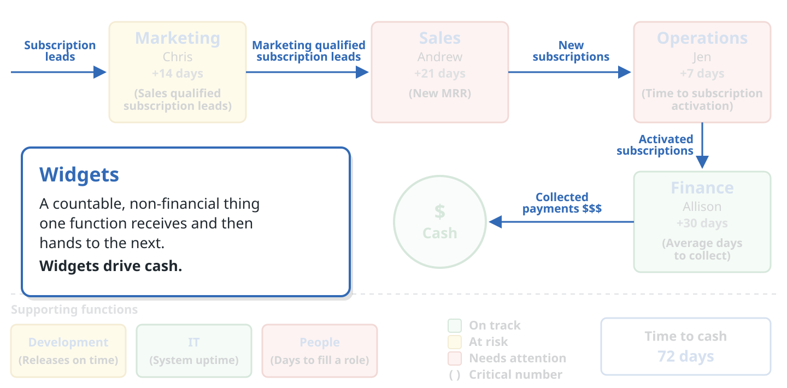
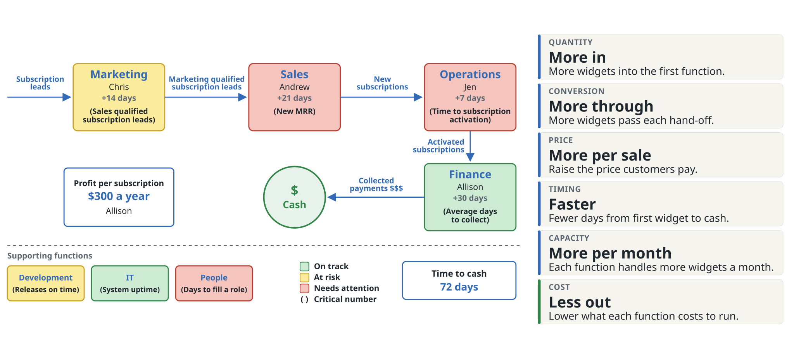
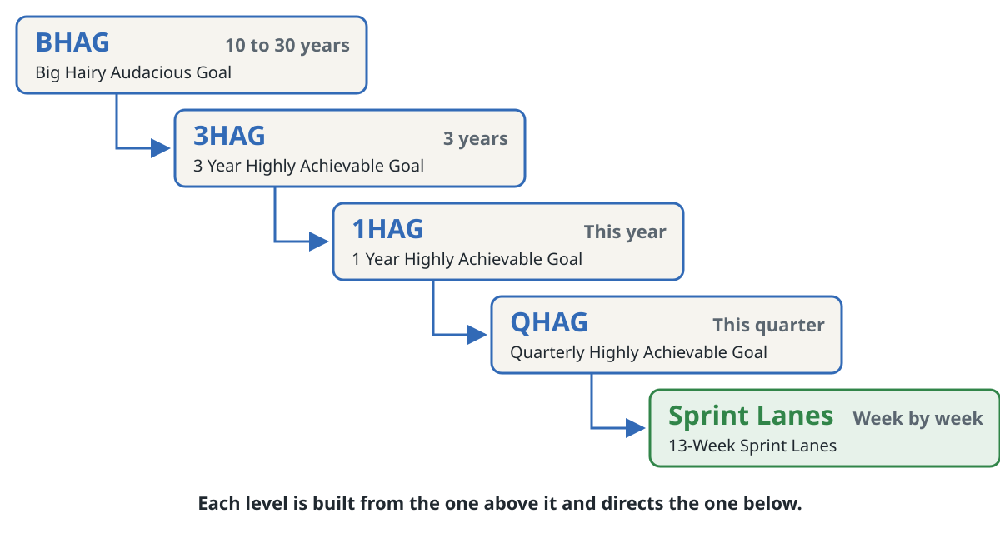
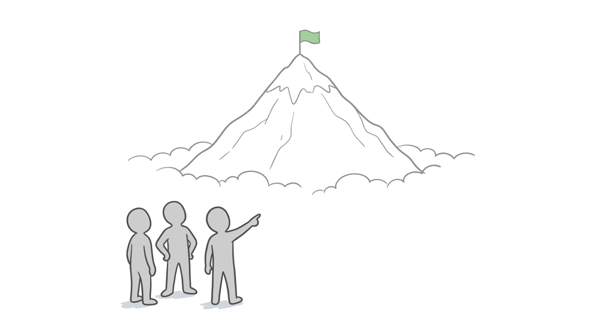
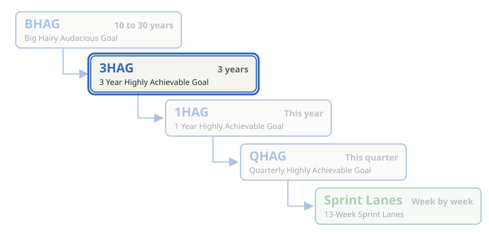
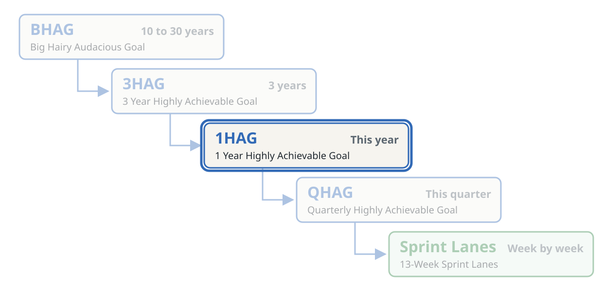
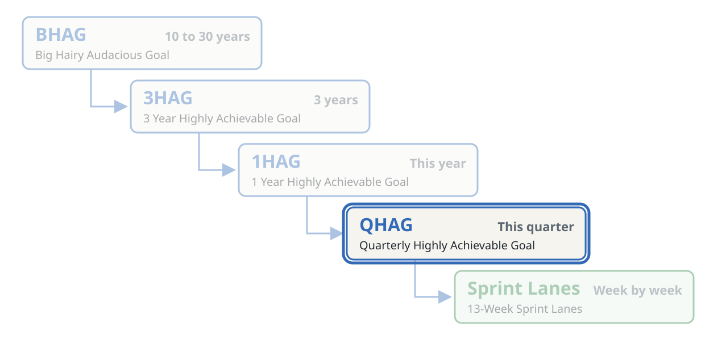

If we didn’t do them, no cash would reach the bank.

iProfit per XJim Collins’s economic engine (Good to Great): the one profit ratio that, if you raised it steadily over time, would do the most to drive your economics. Here, profit per subscription: profit divided by the average number of active subscriptions. Allison owns hitting the target, $300 a year.
06 comp-story
KFFM Example
iProfit per XJim Collins’s economic engine (Good to Great): the one profit ratio that, if you raised it steadily over time, would do the most to drive your economics. Here, profit per subscription: profit divided by the average number of active subscriptions. Allison owns hitting the target, $300 a year.
07 comp-story
Widgets

08 comp-story
KFFM: 6 levers to move more cash faster

iProfit per XJim Collins’s economic engine (Good to Great): the one profit ratio that, if you raised it steadily over time, would do the most to drive your economics. Here, profit per subscription: profit divided by the average number of active subscriptions. Allison owns hitting the target, $300 a year.iiiiii
09 comp-story
From your BHAG to this week’s work.

10 comp-story
BHAG: Big Hairy Audacious Goal
Your company’s ambition for the next 10 to 30 years.
Big enough to stretch everyone.
Tied to why you exist.
Words only. No numbers, no dates.

11 comp-decision
Is the ambition clear, connected and exciting?
1Clear and compelling?
Can people understand the ambition?
2Connected to purpose?
Does it express why you exist?
3Can we recognize success?
Could you tell whether you had achieved it in 25 years?
4Exciting to you?
Does it create energy among the leaders?
5Exciting to the wider team?
Would others want to pursue it?
6A big step in capability?
What would you need to become able to do?
12 comp-story
3HAG: 3 Year Highly Achievable Goal
A three-year stepping stone toward the BHAG.
Connect the future company to the capabilities and targets needed to get there.

13 comp-story
Your 3HAG on one page.
iStatementOne sentence that describes the company you will become in 3 years. No numbers.iKey capabilitiesThe 3 to 5 things that must be in place to make the numbers and the statement true.iKnown forWhat people should think when they hear your company name, 3 years from now.iProfit per XJim Collins’s economic engine (Good to Great): the one profit ratio that, if you raised it steadily over time, would do the most to drive your economics. Here, profit per subscription: profit divided by the average number of active subscriptions. Allison owns hitting the target.
14 comp-story
1HAG: 1 Year Highly Achievable Goal
This year’s step toward the 3HAG.
Set this year’s targets and the few priorities that move the 3HAG forward.

15 comp-story
Your 1HAG on one page.
iProfit per XJim Collins’s economic engine (Good to Great): the one profit ratio that, if you raised it steadily over time, would do the most to drive your economics. Here, profit per subscription: profit divided by the average number of active subscriptions. Allison owns hitting the target.
16 comp-story
QHAG: Quarterly Highly Achievable Goal
This quarter’s step toward the 1HAG.
Set this quarter’s targets, month by month, and the priorities that deliver the 1HAG.

17 comp-story
Your QHAG on one page.
iProfit per XJim Collins’s economic engine (Good to Great): the one profit ratio that, if you raised it steadily over time, would do the most to drive your economics. Here, profit per subscription: profit divided by the average number of active subscriptions. Allison owns hitting the target.
18 comp-story
13-Week Sprint Lanes
The weekly steps that deliver the QHAG.
Plan each quarterly priority week by week, with a weekly widget forecast.
19 comp-decision
What a sprint lane holds.
1One lane for each quarterly priority
Each lane has the same owner as its priority.
2One step each week
The step that week that moves the priority toward its measure of success.
3A widget forecast, week by week
The weekly forecast adds up to the quarter’s widget targets.
20 comp-decision
Test each priority with four questions.
1What problem are we solving?
Find the cause, not the symptom.
2How do we measure success?
An outcome, not a task. Preferably a critical number the company already watches.
3How badly could we mess this up?
Think through the second-order consequences.
4By when will we know if it worked?
Set the achieved-by date now. If it takes a year to find out, it is not the first choice.
21 comp-story
Done is not the same as success.
22 comp-decision
Present your plan in 12 minutes.
1Walk your plan
From your column on the Mural board, BHAG to sprint lanes. Say which numbers are on track.
2Convince us
Why is this going to work?
3Finish with your team
How will you present this plan to your company and get everyone on side?
23 comp-decision
Then 12 minutes of feedback.
1First, check the plan
The group checks it against these 5 points.
Every row on the board has a number and one owner.
Ideally 3, up to 5 priorities, ranked, number one first.
Each 1HAG priority builds a 3HAG key capability. Each QHAG priority advances a 1HAG priority.
The widget targets support the revenue.
The 13-week sprint lanes and weekly widget forecast reach the quarter’s priorities and widget targets.
2Then give feedback
In this order.
Group: experience shares. Use “I” and “did”, not “you” and “should”.
Coach: questions and direct feedback.
Presenter: name the one thing you will change in your plan.
24 comp-decision
Housekeeping
Tonight
EOA Holiday Celebration
Patois, 4:30 PM: fireside chat with chef Craig Wong, then dinner. We leave here at 4:00 PM.
Before Christmas
A virtual session?
Would you like one before Christmas?
Meeting 7
Friday, January 8, 2027
1 to 6 PM. In person or virtual?
25 comp-rule
How do you feel right now?
One phrase. 5 words or fewer.
26 comp-story
Take these slides with you.
Scan the code to open the full deck on your phone.


![KFFM example. Subscription leads enter Marketing (Chris, 14 days, critical number sales qualified subscription leads, yellow), which hands marketing qualified subscription leads to Sales (Andrew, 21 days, critical number new MRR, red), which hands new subscriptions to Operations (Jen, 7 days, critical number time to subscription activation, red), which hands activated subscriptions to Finance (Allison, 30 days to collect, critical number average days to collect, green), which hands collected payments to cash. Profit per subscription is the Profit per X: target $300 a year, owned by Allison. Time to cash is 72 days. Supporting functions: Development (yellow, critical number releases on time), IT (green, system uptime) and People (red, days to fill a role). A legend shows green as on track, yellow as at risk, red as needs attention, and brackets as the critical number.](./assets/1779ea43947b9326190a.svg) Profit per XJim Collins’s economic engine (Good to Great): the one profit ratio that, if you raised it steadily over time, would do the most to drive your economics. Here, profit per subscription: profit divided by the average number of active subscriptions. Allison owns hitting the target, $300 a year.
Profit per XJim Collins’s economic engine (Good to Great): the one profit ratio that, if you raised it steadily over time, would do the most to drive your economics. Here, profit per subscription: profit divided by the average number of active subscriptions. Allison owns hitting the target, $300 a year.![Example 3HAG page for the same subscription business as the KFFM example. Year 3 ends December 31, 2029. 1, Numbers, each with an owner: gross revenue $12 million, Andrew; profit margin 20%, Allison; cash in the bank $3 million, Allison; widgets: 20,000 subscription leads and 8,000 marketing qualified subscription leads, Chris; 2,000 new subscriptions, Andrew; 1,900 activated subscriptions, Jen; 48,000 collected payments, Allison; profit per subscription $600 a year, Allison; head count 70, Pat. 2, Statement: the subscription service our customers can’t imagine running without. 3, Key capabilities: marketing that brings in qualified leads; a sales team that adds new MRR every month; activation in a day, without hand-holding; billing that collects on time, every time. 4, Known for: up and running in a day.](./assets/9f423f6a2524ffb4e721.svg) StatementOne sentence that describes the company you will become in 3 years. No numbers.Key capabilitiesThe 3 to 5 things that must be in place to make the numbers and the statement true.Known forWhat people should think when they hear your company name, 3 years from now.Profit per XJim Collins’s economic engine (Good to Great): the one profit ratio that, if you raised it steadily over time, would do the most to drive your economics. Here, profit per subscription: profit divided by the average number of active subscriptions. Allison owns hitting the target.
StatementOne sentence that describes the company you will become in 3 years. No numbers.Key capabilitiesThe 3 to 5 things that must be in place to make the numbers and the statement true.Known forWhat people should think when they hear your company name, 3 years from now.Profit per XJim Collins’s economic engine (Good to Great): the one profit ratio that, if you raised it steadily over time, would do the most to drive your economics. Here, profit per subscription: profit divided by the average number of active subscriptions. Allison owns hitting the target.![Example 1HAG page for the same subscription business. Year 1 ends December 31, 2027. 1, Numbers, each with an owner: gross revenue $6 million, Andrew; profit margin 10%, Allison; cash in the bank $1.5 million, Allison; widgets: 10,000 subscription leads and 4,000 marketing qualified subscription leads, Chris; 1,000 new subscriptions, Andrew; 950 activated subscriptions, Jen; 24,000 collected payments, Allison; profit per subscription $300 a year, Allison; head count 40, Pat. 2, Priorities: #1 cut activation from 7 days to 2, Jen, done by June 30, 2027, builds Activation in a day, success: days to activate 2 or fewer achieved by September 30; #2 hire and ramp 2 account executives, Andrew, done by September 30, 2027, builds A sales team that adds new MRR every month, success: new MRR at or above $50K a month achieved by December 31; #3 move every customer to automatic billing, Allison, done by September 30, 2027, builds Billing that collects on time, success: days to collect 10 or fewer achieved by December 31.](./assets/072eeaa1655501dbe4d7.svg) Profit per XJim Collins’s economic engine (Good to Great): the one profit ratio that, if you raised it steadily over time, would do the most to drive your economics. Here, profit per subscription: profit divided by the average number of active subscriptions. Allison owns hitting the target.
Profit per XJim Collins’s economic engine (Good to Great): the one profit ratio that, if you raised it steadily over time, would do the most to drive your economics. Here, profit per subscription: profit divided by the average number of active subscriptions. Allison owns hitting the target.![Example QHAG page for the same subscription business, Q1 January to March 2027. 1, Numbers for the quarter and each month, each with an owner: gross revenue $1.2 million, Andrew; profit margin 5%, Allison; cash $1.0 million, Allison; widgets: 2,100 subscription leads and 840 marketing qualified subscription leads, Chris; 210 new subscriptions, Andrew; 195 activated subscriptions, Jen; 4,800 collected payments, Allison; profit per subscription $38 for the quarter ($10, $13 and $15 by month), Allison; head count 32, Pat. 2, Priorities, each supporting an annual priority: #1 remove the first 2 days of activation, Jen, done by February 28, success: days to activate 5 or fewer achieved by March 31; #2 hire the first account executive, Andrew, done by March 15, success: new MRR at or above $25K a month achieved by June 30; #3 move the 100 largest customers to automatic billing, Allison, done by March 31, success: days to collect 20 or fewer achieved by June 30.](./assets/20bbfa6d81154eaeb335.svg) Profit per XJim Collins’s economic engine (Good to Great): the one profit ratio that, if you raised it steadily over time, would do the most to drive your economics. Here, profit per subscription: profit divided by the average number of active subscriptions. Allison owns hitting the target.
Profit per XJim Collins’s economic engine (Good to Great): the one profit ratio that, if you raised it steadily over time, would do the most to drive your economics. Here, profit per subscription: profit divided by the average number of active subscriptions. Allison owns hitting the target.